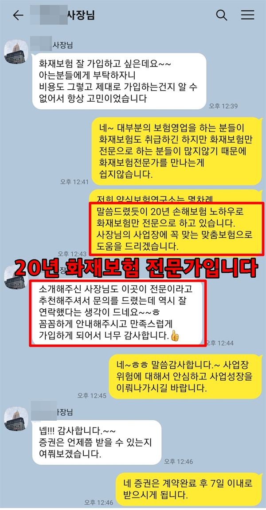
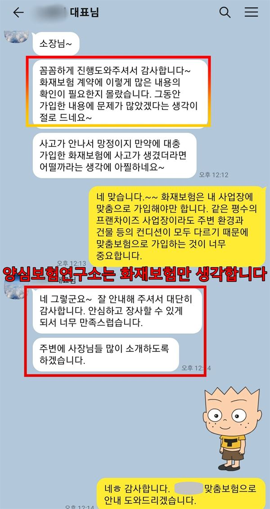

부산냉동창고화재보험은 감천항 중심 사하구·서구 냉동창고의 화재, 냉매 설비 사고, 온도 이탈 손해를 대비하는 보험입니다. 보관 물건 대부분이 얼린 수산물이라 정전이나 압축기 고장으로 인한 해동 손해를 특약으로 따로 살펴봅니다.
부산냉동창고화재보험 보장 항목
- 단열재 화재: 벽·천장 두꺼운 단열재 속으로 숨어 번진 불로 커진 항구 냉동창고 손해
- 수산물 해동: 정전·압축기 고장으로 녹은 원양 어획물·수입 수산물(냉동·냉장 특약 시)
- 암모니아 누출: 감천항 냉동창고 냉매 배관 누출로 생긴 작업자 피해와 이웃 배상 문제
- 수탁 수산물: 참치 같은 고가 원양 어획물의 품질 저하·손상에 대한 창고업자 배상
부산냉동창고화재보험 보험료 산정 기준과 가입 시 고려사항
- 단열재·증축: 수십 년 된 창고의 벽·천장 단열재 자재와 덧댄 공사·증축 이력
- 냉매·기계실: 암모니아 사용 여부, 누출 감지기, 기계실 분리, 냉매 충전량·점검일
- 비상 발전: 정전 때 몇 시간이나 보관실 온도를 지킬 수 있는지 계산한 발전 용량
- 화주별 금액: 품종과 보관량을 화주별로 정리한 수탁 책임 한도, 자동 온도 기록
부산 냉동창고는 벽 속 단열재 종류와 냉매가 무엇인지부터 묻습니다. 그다음 정전으로 온도가 오르면 수산물 손해를 어떻게 볼지 확인합니다.
부산 냉동창고 안내
부산 냉동창고, 왜 창고화재보험이 중요할까요?
부산냉동창고화재보험은 감천항을 중심으로 사하구와 서구에 모인 냉동창고가 화재, 냉매 설비 사고, 온도 이탈로 입는 손해에 대비하는 보험을 말하며, 보관 물건 대부분이 얼린 수산물이라는 점에서 일반 창고와 결이 다릅니다. 원양어선이 잡은 생선과 수입 수산물이 항구에 내리면 가장 먼저 향하는 곳이 이 일대 냉동창고입니다.
부산의 냉장·냉동 창고 입지를 다룬 연구에 따르면 2003년 이후 부산 냉동창고 대부분이 사하구와 서구에 자리 잡았습니다. 남부민동, 송도, 장림동, 감천동에 냉동창고가 늘어서 있고, 2014년 기준 부산의 냉장능력은 전국의 41.4%였습니다.
냉동창고는 영하의 온도를 지키기 위해 벽과 천장을 두꺼운 단열재로 감쌉니다. 이 단열재가 불에 타면 짙은 연기와 열이 안에 갇혀 진화가 매우 어렵습니다. 한국화재보험협회는 1998년 부산의 한 냉동창고 화재를 대표적인 냉동창고 참사로 기록하고 있습니다.
냉동 설비도 따로 봐야 합니다. 대형 냉동창고는 암모니아 같은 냉매를 쓰는 곳이 많아 배관이 새면 작업자 안전과 주변 피해가 함께 문제가 되고, 불이 나지 않아도 정전이나 압축기 고장으로 온도가 오르면 보관 수산물 전체가 상할 수 있습니다. 화재보다 자주 일어나는 사고가 바로 이런 온도 이탈입니다.
1998 부산 부산의 한 냉동창고에서 불이 나 큰 인명 피해가 났습니다. 단열재가 탈 때 나오는 연기가 피해를 키운 대표 사례로 꼽힙니다. (한국화재보험협회)
주요 위험
부산 냉동창고는 어떤 화재 위험을 먼저 살펴보나요?
단열재 속으로 번지는 불
벽 속 단열재를 타고 불이 숨어 번져 겉으로 보이지 않는 사이 커질 수 있습니다.
암모니아 냉매 누출
배관이 새면 작업자 피해와 이웃 배상 문제가 함께 생길 수 있습니다.
정전·고장으로 인한 해동
불이 나지 않아도 온도가 오르면 보관 수산물이 한꺼번에 상할 수 있습니다.
화주 수산물의 높은 가치
참치 같은 원양 어획물은 금액이 커서 수탁 화물 책임 한도를 넉넉히 봅니다.
쉬지 않는 압축기 전력
24시간 돌아가는 냉동기와 제상 히터가 전기 화재의 출발점이 되기도 합니다.
오래된 항구 창고
수십 년 된 창고는 단열재를 덧댄 이력과 증축 부분을 확인해야 합니다.
※ 실제 보장 여부와 한도, 면책 사항은 가입하는 상품의 약관과 창고 현황에 따라 달라집니다.
방문 상담
부산 냉동창고 직접 방문 상담
부산 냉동창고는 기계실과 냉매 배관, 비상 발전기를 먼저 보고 보관실로 들어갑니다. 감천항 주변 감천동·장림동부터 남부민동·송도 창고까지 방문 상담이 가능합니다.
꼭 확인할 점검 항목
부산 냉동창고 화재보험 가입 전 무엇을 점검하나요?
- 단열재 종류와 증축 이력벽·천장 단열재 자재와 덧댄 공사가 있었는지 확인합니다.
- 냉매 종류와 기계실 관리암모니아 사용 여부, 누출 감지기와 점검 기록을 봅니다.
- 비상 발전 용량정전 때 몇 시간이나 온도를 지킬 수 있는지 계산합니다.
- 온도 기록 장치보관실 온도가 자동으로 기록되고 경보가 울리는지 봅니다.
- 화주별 수산물 금액품종과 보관량을 화주별로 정리해 수탁 책임 한도를 정합니다.
고객 후기
실제 계약고객 만족 사례




※ 실제 계약고객과 나눈 카카오톡 상담과 후기 일부이며, 개인정보는 가렸습니다.
지역 상담 Q&A
부산냉동창고화재보험 Q&A
부산 냉동창고는 일반 창고화재보험과 무엇이 다른가요?
온도 이탈과 냉매 사고까지 함께 봐야 한다는 점이 다릅니다. 화재만 대비하면 정전·설비 고장으로 수산물이 상하는 손해는 빠질 수 있습니다.
정전으로 냉동 수산물이 녹으면 보상받을 수 있나요?
냉동·냉장 손해 특약을 넣었다면 보상 대상이 될 수 있습니다. 온도 기록과 정전 원인 자료가 보상 과정에서 중요한 근거가 됩니다.
암모니아 냉매를 쓰면 가입이 거절되나요?
거절 사유가 되는 것은 아닙니다. 누출 감지기, 기계실 분리, 정기 점검 기록을 갖추면 인수 검토가 수월해집니다. 냉매 충전량과 최근 점검일을 함께 알려 주시면 좋습니다.
감천항 창고에 맡긴 화주가 수산물 품질 저하를 이유로 배상을 요구하면요?
보관 중 과실이 인정되면 창고업자배상책임에서 보상 대상이 될 수 있습니다. 입고 때 상태와 보관 온도 기록을 남겨 두면 다툼을 줄일 수 있습니다.
부산 냉동창고 압축기도 화재 원인이 될 수 있나요?
24시간 돌아가는 냉동기와 제상 히터가 전기 화재의 출발점이 되기도 합니다. 기계실 전기 설비 점검 기록을 남겨 두면 인수 검토와 사고 원인 설명에 도움이 됩니다.